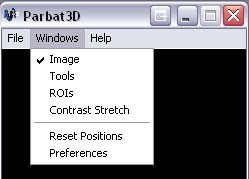
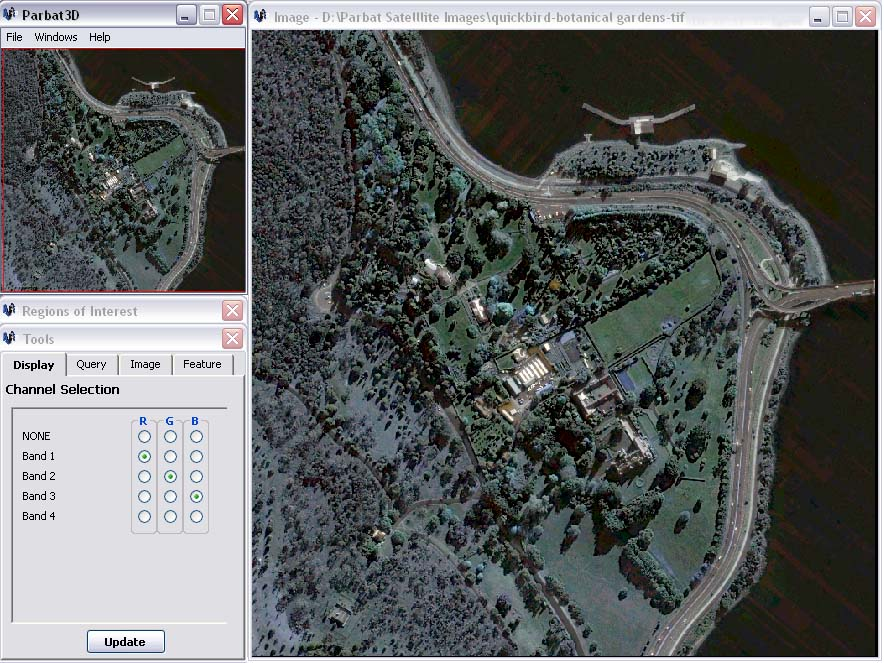

The Overview window remains visible at all times, unless minimized. Clicking on the 'X' close button at the top-right of the window will close the program.

The extra windows can be shown/hidden by using the 'Window' menu.

Each window listed under the 'Window' menu has a tick next to it if it is currently visible, or no tick if it is hidden.

To change the visibility state of a window, simply click on one of the menu items. If a 'Window' menu item appears to be grayed out or disabled, it can not be used during the current state of the program and therefore can not be shown. An image must be loaded for all menu items to be available. See Loading an Image
The extra windows can also be hidden by clicking on the 'X' close button button at the top-right of the window.
Parbat3D allows each of windows to be moved around independantly, or snapped together and moved around with the Overview Window.
To move a window, press and hold the left mouse button on its title bar, move the mouse, then release the mouse button.
To snap a window to another one, simply move it towards the second window until they touch each other.
To move multiple windows around the screen at the same time, snap them all to the Overview Window and then move the Overview Window with the mouse.
The Image Window can be resized by pressing and holding the left mouse button down on a corner of the window, moving the mouse, then releasing the left mouse button.

The Image Window can also be maximized by clicking on the maximize button at the top-right area of the window.
The positions of the main windows are automatically saved and restored when you close and re-open Parbat 3D.
See Preferences section for more inforation.